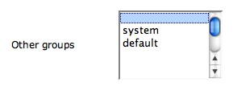

A user can belong to more than one group. How create a group you can find on section Section 4.11. The list Other
groups displays a collection of existing groups (see Figure 4.8-1).
From the Edit User page, select groups (single or multi
selection - multi selection can be done by SHIFT or CTRL
key) from the Other groups list, you want the user to be a
member of.
|
| Figure 4.8-1: Change user groups. |
To remove the user from the groups is a member of, select from the Edit User page, the Blank item from the Other groups.
|  |
| Figure 4.8-2: Delete user from group. |